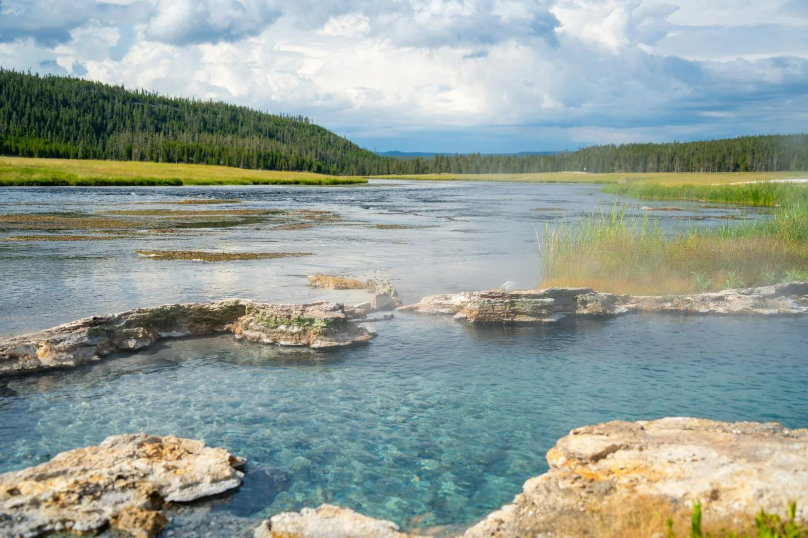
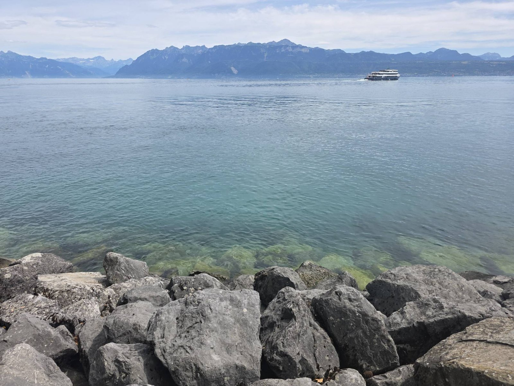
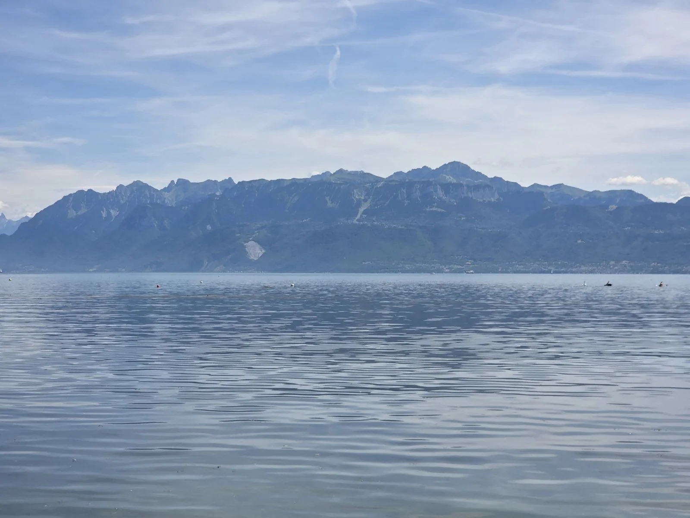
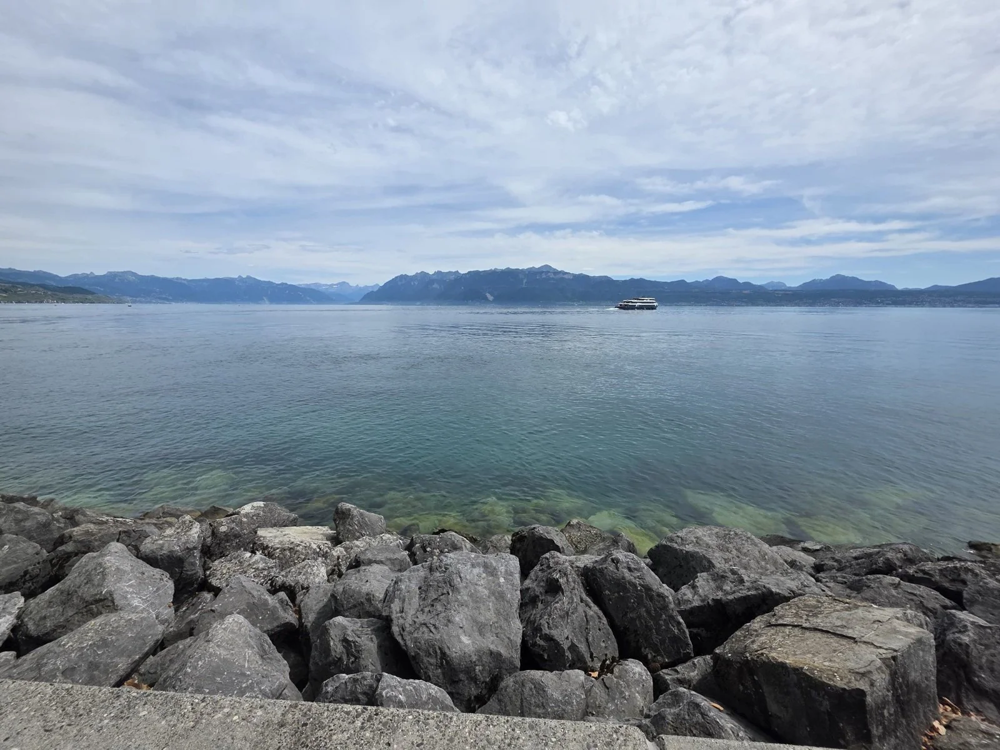
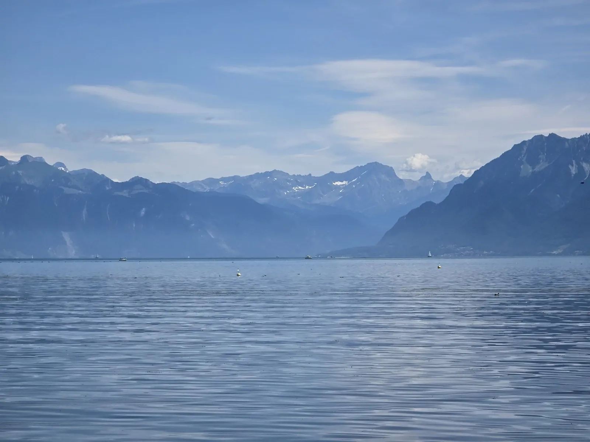
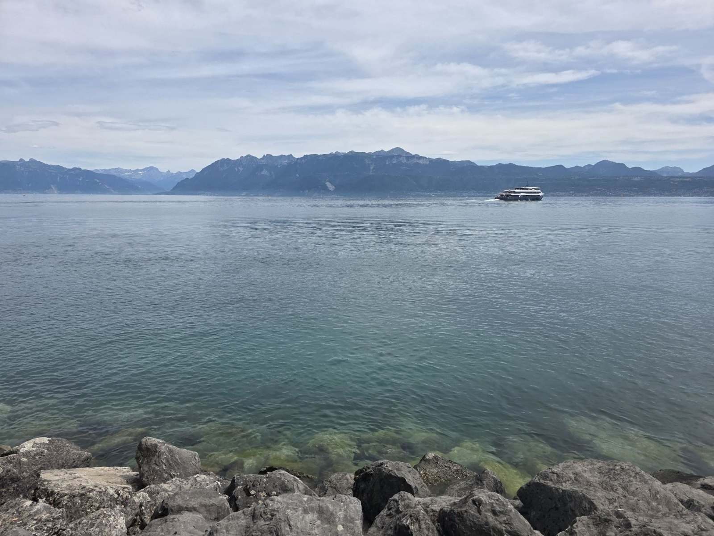
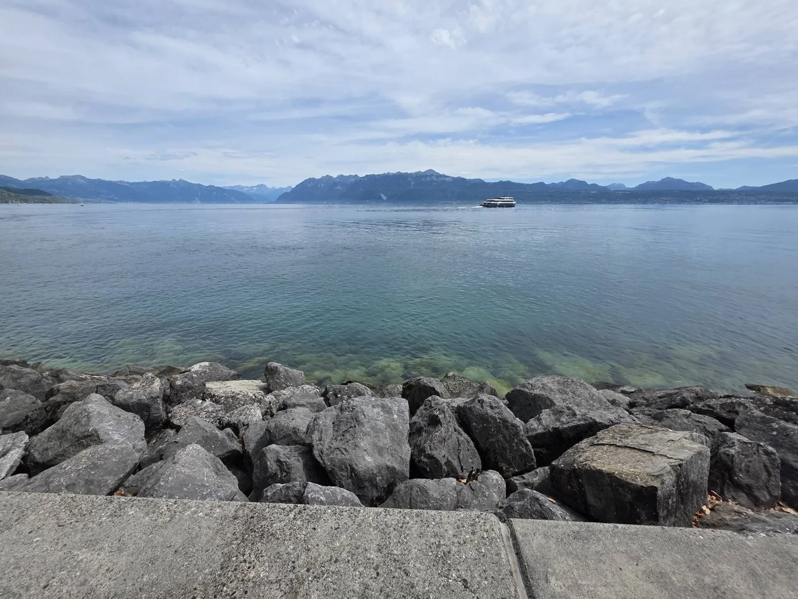

the summit · by cable car from the field · off the main campsite
A log cabin at the top of a mountain, at night
The Emergent Future Worlds Meets Mountain Man
David’s: a fire behind glass, lights in a colour you pick, a big screen, a lake under a full moon through the window, a hot spring steaming outside the door, and the wolves.
You come in by the door on the left and the whole back wall is a window. Below it the lake is lying under a full moon, with the moon’s path across the water, the mountain’s own shoulder between you and it, and, on the warm ground just outside the glass, the pack, lying in the snow where the hot spring’s steam goes past them. Inside, the walls are logs, and the room is lit three ways at once: the fire behind the glass of the stove, with the coffee pot on top and a shelf of cups above it; the LED strips along the top of the walls and under the big screen, in whichever colour you pick, the whole rainbow among them; and the moon. A corner sofa runs along the right wall, a high-back sofa sits under the window, two high-back armchairs face the stove and the screen, every one of them piled with cushions in bright colours, bean bags in the same bright colours lie about the floor, and the low table between them has the crisps, the sweets and a bowl of rainbow sweets on it. The oil diffuser is on the side table by the stove, with its shelf of oils beside it. The big screen is on the right wall with a speaker standing either side of it. One wolf is asleep on the rug by the stove. Nothing in here moves until you press the switch, and the words beside it say what did.
Whose this is
This is David Gray-Hammond’s (he/they). He works with Helen Edgar and Ryan Boren, and he knows Jess, whose Bough House is down on the field, and others in the Stimpunks community: those are Helen’s words for him, passed on with the brief, and so are his name and his pronouns. Everything he makes is on one page of his own, which was read for this room: his books, his podcasts (Autistic Identity With NeuroHub, The Mycelial Mind, and A Multitude of Drops, a series on philosophies of Autistic identity), PhiliaSense, his one-to-one and professional services, the online communities NeuroHub Community runs, and The Wider Existence, the newsletter he writes with Helen.
One switch
Everything in the cabin is on one switch: the fire, the LED strips, the diffuser, the big screen’s plate and the speakers go on together and off together, and the words beside the switch say which it is. When they come on, the fire burns and the diffuser’s wisps rise, at Regular and MAX; at Gentle they are lit and still, and the words are the same. The switch remembers nothing and sends nothing: come back and the cabin is as you first found it.
The lights are yours to colour. Next colour steps the strips through the cabin’s colours one press at a time, at every setting: teal, magenta, lime and periwinkle, and then the whole rainbow, red to violet. At MAX GLITTER there is a second button that lets them drift from one colour to the next on their own, round the rainbow, slowly, until you stop them, and it never flashes: a colour takes seconds to become the next one.
The diffuser has a shelf of oils beside it, and Change the scent steps through them, saying which is in: lavender, chamomile, tea tree, orange blossom, chocolate, marshmallow and cupcakes. A scent here is a smell and nothing else; nothing says what any of them does for you.
Without JavaScript the cabin is as drawn, everything on and still, and the buttons do not appear.
The hot spring, and what runs on it
Outside the door the snow stops at a ring of stones and the ground is water: a hot spring, steaming in the cold, with a shelf of rock along one side to sit on and a step beside it at seat height, so a wheelchair transfers straight onto the shelf and back. The mountain is warm inside, and the cabin runs on that: the spring’s water goes through pipes under the floor before it reaches the pool, and a small geothermal plant in the hut behind the cabin makes the electricity for the lights, the screen and the speakers out of the same heat. No wire comes up the mountain. The stove is for the look of a fire and the warmth of sitting in front of one, and the coffee. Ryan’s Solarpunk Hermitage down on the field runs on the sun; this runs on the ground.
The spring is water, hot. Nothing here says what it does for a body, because that is the sentence every hot spring on the internet is sold with, and it is not one this street makes.

The wolves
One wolf lives inside, asleep on the rug by the stove with its tail over its nose, and the rest of the pack lives on the mountain and comes as far as the stones. The warmest ground on the whole mountain is the strip where the pipes run from the spring to the cabin, and that is where they lie, in the moonlight, with the steam going past them. They are the mountain’s and not the cabin’s: nobody feeds them, nobody names them, nobody counts them, and they go when they want to. All Needs Met, past the campgrounds’ wood, is where the land is left to the wild things on purpose; up here it was never anybody else’s to leave.
You can hear them. The button below makes the pack howl: one wolf starts and the others join, and it lasts about five seconds. The howl is made in your browser, out of nothing but arithmetic, when you press and not before; it is not a recording of any wolf, nothing is fetched, and the loudest it can be is a little under the speakers’ own ceiling.
The big screen
The big screen is on the right wall, with a speaker standing either side of it. What goes on it is Future Mountain Man, David’s own playlist, put on whole and in his order, and under it the rack has every video on it, one press each, either where it hangs or up on the big screen. Nothing plays until you press. The one switch puts the plate away with everything else.
Future Mountain Man, on YouTube, by NeuroHub Community. David's playlist, on NeuroHub Community's own channel, put on whole in his order. No runtime: it is his list and he can add to it, and a total here would be wrong the next time he did.
What is on it, one press each
-
Restless Spirit- Lonesome Valley (original)
Lonesome Valley · 12 December 2021 · 3:14
-
Paramore: Last Hope (LIVE)
Paramore · 1 September 2014 · 5:28
-
Hayley Williams - Asystole [Official Audio]
Hayley Williams · 4 February 2021 · 3:06
-
The Skinner Brothers - Nothing on Me (Official Music Video)
The Skinner Brothers · 18 June 2026 · 2:44
-
Paramore: Rose-Colored Boy [OFFICIAL VIDEO]
Paramore · 5 February 2018 · 4:40
-
Enter Shikari - Common Dreads (Official Audio)
Enter Shikari · 17 December 2019 · 2:08
-
Ren - Money Game Part 2 (Official Lyric Video)
Ren · 16 April 2020 · 3:43
-
Toccata and Fugue in D Minor (Best Version Ever)
MovieMongerHZ · 5 October 2010 · 9:21
Read off the playlist on 18 October 2026, in its own order. The playlist is David’s and he can add to it, so the whole thing can run on past this rack, which catches up when somebody reads the playlist again.
Through the window: Lake Geneva
The window is the way to David’s own photographs: press it in the drawing, or the button here, and they open to scroll through, one at a time.
Every photograph on this wall is David’s own, taken on Lake Geneva, Switzerland, in July 2026, at the ISPS congress in Lausanne, 6 to 8 July 2026: ISPS is the International Society for Psychological and Social Approaches to Psychosis, and that year’s congress was called Back to the Future: Inspired by Pioneers. Read off isps.org on 2026-10-18.






The cable car, and the way down
The way up is a cable car, from a bottom station by the pond on the field to a top station on the snow beside the cabin. It hangs on its wire down the left-hand edge of this page: Send the cable car, in the row under the drawing, sets it running up and down the wire and stops it again, and pressing the car itself takes you back down to the campsite. It is still until you send it, and at Gentle it stays still. The car is level with the platform at both ends, so a wheelchair rolls straight on and straight off, there is a seat along each side and a window the whole way round, and it goes when somebody presses the button and not before. It is how Ryan, Helen and Jess come up to visit, and how David goes down to them. For anybody who would rather walk, a track goes up from the same place in long zigzags with a bench at every turn, so the walk is slow rather than steep. From the top station the whole campsite is laid out below: the pond with its swing seats, the roofs of the pitches, the stream along the edge of the field, and past the treeline the glow of the street.
The neighbours on the campgrounds, from the pond, down a pebble path or up the cable car: Helen Edgar’s Faery Yurt at pitch 01, Jess’s Bough House at pitch 05 and Ryan Boren’s Solarpunk Hermitage at pitch 03. Go and visit.
Whose words these are
The brief is David’s, passed on by Helen Edgar on 2026-10-18: a log cabin on a mountain with a lake through the windows, the windows opening onto his photographs; a fire; a lounge of high-back sofas, armchairs and a corner sofa; warm and cosy meets smart-home modern, with LED strips that change colour, a big screen and speakers; his own playlist on the screen; an oil diffuser; one switch for all of it; one wolf inside and the pack outside under a full moon, with a button to hear them; coffee on the stove and lots of cups; crisps, lots of sweets and Skittles; bean bags in bright colours and bright cushions everywhere; lights in rainbow colours, and different scents for the diffuser, lavender, chamomile, tea tree, orange blossom, chocolate, marshmallow and cupcakes; and, passed on the same morning, eco-friendly like Ryan’s hermitage, on geothermal energy, a thermal hot spring outside, a cable car up so that Ryan, Helen and Jess can visit, and wolves outside. The room’s name is his, as Helen gave it, and he is credited as David Gray-Hammond, he/they, as she passed on. The drawing and the words here were written for this room; the rainbow sweets in the bowl are Skittles, his favourite, and the name is Mars Wrigley’s mark. What David makes was read off his own page on 2026-10-18; the playlist’s title and channel, and every video’s title, channel and length, were read off their own pages on YouTube the same day; the congress’s name, theme, city and dates were read off isps.org the same day. Set in Staatliches, by Brian LaRossa and Erica Carras, and Assistant, by Ben Nathan with Adobe Systems, both under the SIL Open Font License, read off their own records. Every source is in the liner notes.
Job marker — a carabiner, dropped on the snow by the top station
You have found a job marker. The Adventurer’s Guild is a shopfront on the street, and it posts jobs that send you round these rooms. Take the code below to its board and that job is done. Nothing here is scored, nothing expires, and one is a perfectly good number of jobs to do.
The job: Which lake is on the cabin wall?
Before the code: Which lake is through the cabin's window?
Hint 1
It is on the window's own heading.
Hint 2
A lake in Switzerland, with a city on it that held a congress.
Last hint
The heading says which lake.
Give me the answer
The answer is Lake Geneva. Lake Geneva, in Switzerland: David took the photographs there in July 2026, at the ISPS congress in Lausanne.
Taking the answer is a real way through this, not a lesser one. Nothing is watching and nothing is written down.
Quest code: CARABINER
That is the one.
Lake Geneva, in Switzerland: David took the photographs there in July 2026, at the ISPS congress in Lausanne.
Quest code: CARABINER
HOW LOUD DO YOU WANT IT?
Starts wherever your device says. Nothing moves, flashes, or plays until you say so — and in the cabin, the fire and the diffuser move only once the switch is pressed, and at Gentle they stay still. The lights drift only at MAX GLITTER, only when you ask, and never flash.